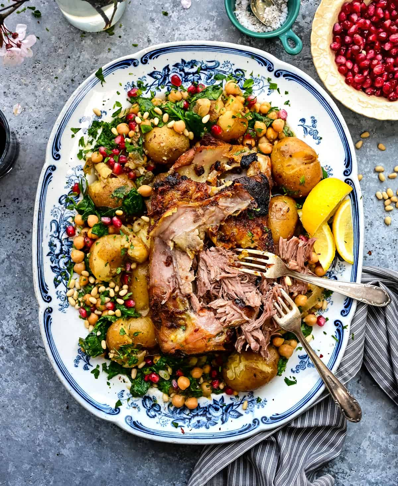

Lamb Shoulder Recipe

Slow roast lamb shoulder with crispy potatoes
The shoulder rack is particularly succulent and, therefore, very well suited to slow-roasting. The only accompaniment required here is about a kilo of Dutch cream or kipfler potatoes, peeled, sliced into 5mm-thick rounds and steamed until tender. Season them, add a drizzle of extra-virgin olive oil and arrange on a platter with the lemon wedges, to use as a bed for the shredded meat. Serve with lashings of aioli.
Ingredients
- 2 lamb shoulders, on the bone, weighing about 1.25 kg each
- ½ tsp ground coriander
- ½ tsp ground fennel
- ½ tsp ground cinnamon
- 2 star anise, ground
- ¼ tsp ground cardamom
- ¼ tsp freshly ground white pepper
- 2 tsp sea salt
- 60ml extra-virgin olive oil, plus extra
- lemon wedges, to serve
- aioli, to serve
Steps
- The night before, trim the excess fat from the edges of the shoulders. Mix the spices, sea salt and extra-virgin olive oil together and rub over the lamb. Put the lamb in a container, loosely cover with plastic wrap, then refrigerate overnight.
- Remove the lamb from the refrigerator 2 hours before cooking.
- Preheat the oven to 130C fan-forced (150C conventional). Place the shoulders in a roasting tin large enough to fit both and drizzle with a little extra virgin olive oil. Add 125ml water.
- Use two sheets of foil joined together to make a tent over the lamb, then cook for 2.5–3 hours. Reduce the heat to 110C fan-forced (130C conventional) and cook for 4 more hours.
- When ready, the lamb will be very well done. Remove from the oven and allow to rest for 20 minutes, leaving the foil on, before shredding the meat from the bone. Serve atop the potatoes and accompany with lemon, ground pepper and aioli.